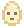

a little company

lilgotchiA tiny roommate for your corner of the internet. Feed it, play a round, and see who it grows into.
Start with an original egg, choose any of the 11 original characters, or meet Slice and Cyberpunk. Every choice keeps its own saved progress.
Meet the lineup
Start with an original egg, a little dough, or a binary seed. Slice and Cyberpunk show a peek at their later looks below.
Make a little room
Copy the built folder to your site, then add these two lines. No account needed. Sound starts off.
Download the current preview build. Unzip it, then copy its contents into /assets/lilgotchi/0.1.0/.